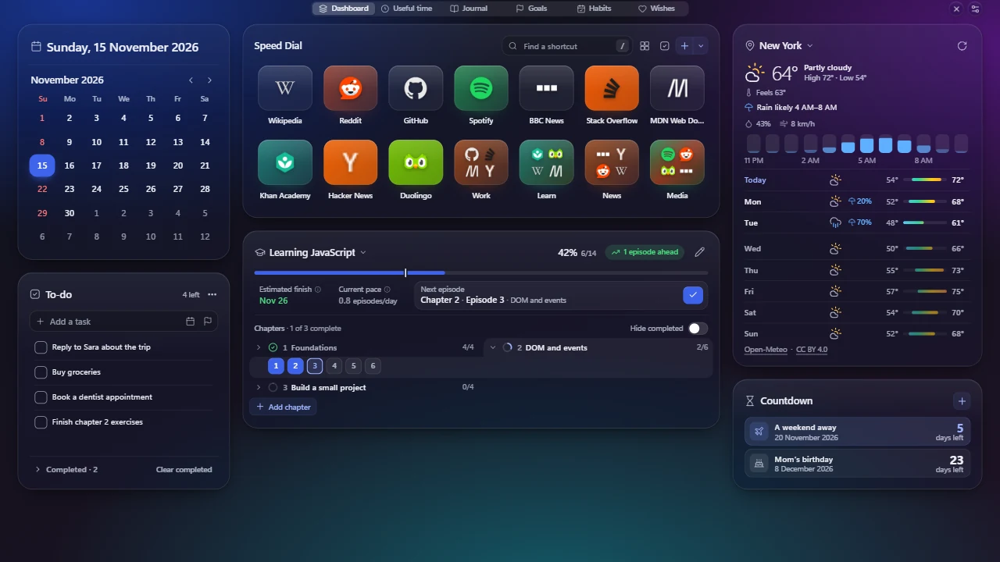
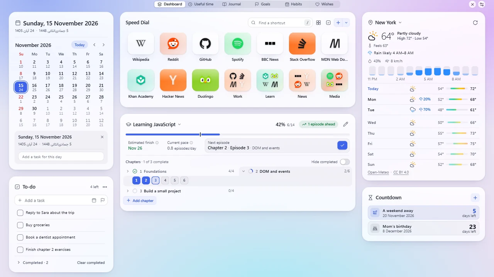

Tivona, a new tab dashboard for Chrome
Open a tab to reach your favorite websites, see what’s due today, and start a focus session. Tivona puts your shortcuts, to-do list, and calendar on the same page.
Free for desktop Chrome. Tivona replaces your new tab page and works without a Tivona account.

Shortcuts and tools for planning your day
Website shortcuts and folders
Use Speed Dial to pin your most visited sites, group them into folders, and find them with the keyboard. You can also import a folder from Chrome Bookmarks.
To-do list and daily planning
Add tasks with due dates, priorities, notes, and checklist steps. See what’s due today or overdue, and pick a day on the calendar to see the tasks scheduled for it.
Persian, Gregorian, and Hijri calendars
Use the calendar widget to switch between Shamsi (Jalali), Gregorian, and Hijri dates. Show more than one calendar together and see Iranian holidays in the Shamsi view.
Pomodoro timer and focus time
Set your own focus and break lengths or use the stopwatch. Start a focus session from a task and record the time you spent on it.

Customize which widgets you see. You can check the weather, count down to a date, track habits or goals, follow course progress, or keep a journal.
Get started with your first tab
- Install Tivona from the Chrome Web Store and open a new tab.
- Add a favorite website to Speed Dial or add a task with a due date.
- Choose your language, calendar, and visible widgets in Settings.
Offline use and privacy
The core tools, including your calendar, tasks, journal, and timer, work offline. Opening websites and fetching weather or online shortcut icons use an internet connection.
Your tasks, journal, and focus history are stored on this device. Some settings and shortcuts can use Chrome Sync if you have it enabled. Builds configured for PostHog offer optional usage sharing that starts off. See the privacy policy for details and controls.
Help and feedback
To recover data after an update, open Settings → Data → Automatic backups. If you need help, email Tivona support or use the support section on the Chrome Web Store listing.